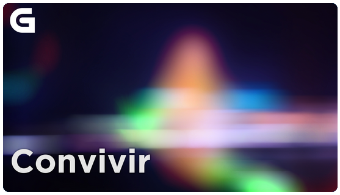

These are the podcasts I've collaborated with during season 23/24.

A aplicación da IA no Servizo de Emprego Galego
18 de xuño de 2024
22' GALEGO
Defensa dos menores fronte a tecnoloxía
11 de xuño de 2024
18' GALEGO
Deseño a miña serie coa IA
4 de xuño de 2024
19' GALEGO
Fallos e froitos da IA
28 de maio de 2024
13' GALEGO
Os dous lados da IA
21 de maio de 2024
18' GALEGO
As fendas dixitais
14 de maio de 2024
16' GALEGO
Empresas de IA nos tribunais
7 de maio de 2024
15' GALEGO
Nativos IA
30 de abril de 2024
13' GALEGO
As guerras de Elon Musk
23 de abril de 2024
19' GALEGO
Laura Castro, nova directora do Centro de estudos de xénero feministas da UDC
17 de abril de 2024
10' GALEGO
Os detectores de texto non son infalibles
16 de abril de 2024
15' GALEGO
O engano dos supermercados de Amazon
9 de abril de 2024
16' GALEGO
Fin dos sistemas de identificación por voz
2 de abril de 2024
16' GALEGO
Hai que regular a Intelixencia Artificial?
19 de marzo de 2024
16' GALEGO
O risco do uso de voces xeradas pola IA
12 de marzo de 2024
12' GALEGO
Radio Galega (Convivir)
5 de marzo de 2024
00:27:33 (11'43") GALEGO
Da IA non se salva nin a ciencia
27 de febreiro de 2024
14'31" GALEGO
A actualidade da IA
20 de febreiro de 2024
13'04" GALEGO
Radio Galega (Convivir)
13 de febreiro de 2024
00:21:25 (14'25") GALEGO
Radio Galega (Convivir)
6 de febreiro de 2024
00:25:25 (11'05") GALEGO
Coidar os datos
30 de xaneiro de 2024
13' GALEGO
Radio Galega (Convivir)
16 de xaneiro de 2024
00:28:45 (15') GALEGO
Radio Galega (Convivir)
9 de xaneiro de 2024
00:34:35 (14'30") GALEGO
Aprender intelixencia artificial co xogo
2023
13' GALEGO
IA e cambio climático: pros e contras
2023
14' GALEGO
Novidades do ChatGPT
2023
15' GALEGO